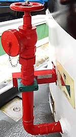
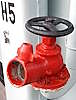
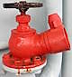
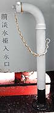

Fire Hydrants "on the sea"
When we talk about fire hydrants, most people will probably think about the ones on the streets or the ones inside buildings in stairwells, how about the ones "on the sea"?
Fire hydrants on a ferry
I use the ferry route between Hung Hom Pier and North Point Pier every once in a while. If I am lucky, the service would be operated by the electric ferry Xin Ming Zhu 39 (Xin Ming Zhu means "New Pearl" in mandarin). There are at least two fire hydrants of the same model on the ferry, which look like a smaller "viaduct hydrant" with oversized outlet nozzle. They both have a plaque which says: FIRE HYDRANT 521-01-F7. The outlet nozzle cap have no handles or nut.
 |
| one of two red "521-01-F7" fire hydrants on Xin Ming Zhu 39 |
| the back of electric ferry Xin Ming Zhu 39 |
| Photo taken in Y2026-M07 |
Fire hydrants on a retired fireboat
On the retired fireboat Alexander Grantham, there are six indoor fire hydrants with instantaneous outlet attachment, numbered H1 to H6. According to a plaque on the fireboat, these fire hydrants would be "used in conjunction with the fire hoses to combat any fire on board the fireboat Alexander Grantham".
While I am unfortunately not able to find any street hydrants on board (which makes sense), I did find two Swan Neck-like objects described as 淡水柜入水口 (which I believe translates to something along the lines of "fresh water tank inlet"). The joint between the curve and straight sections resemble the joints on some two-section Goosenecks found in Macao (Swan Neck is called Gooseneck in Macao), the joints on two-section Swan Neck in Hong Kong look different.
 |
| Fire hydrant H5 |
| Fireboat Alexander Grantham Exhibition Gallery at Quarry Bay Park |
| Photo taken in Y2026-M07 |
 |
| side view of Fire hydrant H3 |
| Fireboat Alexander Grantham Exhibition Gallery at Quarry Bay Park |
| Photo taken in Y2026-M07 |
| ||
| Fire hydrant H6, which is slightly smaller and its nozzle do not tilt up | ||
| Fireboat Alexander Grantham Exhibition Gallery at Quarry Bay Park | ||
| Photo taken in Y2026-M07 |
 |
| front "fresh water tank inlet" |
| Fireboat Alexander Grantham Exhibition Gallery at Quarry Bay Park |
| Photo taken in Y2026-M07 |